Everything WA Folders can do, with a video for each
28 features for WhatsApp Web. Each card opens a page with a short silent video (about 9 to 22 seconds, captioned on screen), step-by-step instructions and what is Free or Pro. Recorded on version 2.4.1 with made-up chats.
Organize
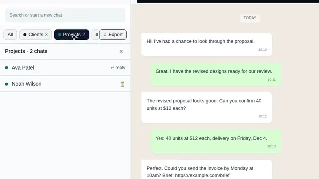
Folder tabs
Sort chats into folders like Family, Work and Clients. Each folder is a tab above the WhatsApp Web chat list.

Needs reply, Questions for me, Waiting on them
Lists of chats where you owe a reply, where someone asked you a question, and where you are waiting on the other person.
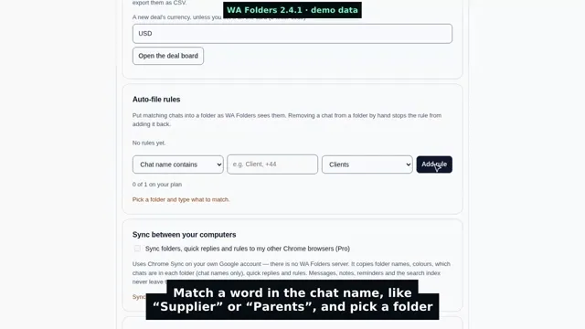
Auto-file rules
Rules that put chats into a folder for you, based on the chat name.
Find

Search chats, notes and messages
Search chat names, your private notes and the messages WA Folders has seen. Filter by folder, notes or links, and save searches.

Older messages and Load whole chat
Leave a chat open and WA Folders quietly adds its older messages to search. Pro can load the whole chat at once.
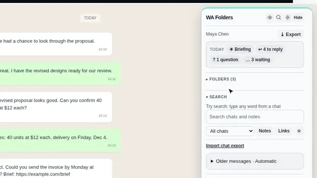
Phone chat import
Bring in the chat export from your phone (.txt or .zip) so years of messages become searchable on WhatsApp Web.
Follow up

Reminders and follow-ups
One-click reminders on a chat, and “remind me if they don’t reply” follow-ups that clear when they answer.

Quick replies
Save replies you type every day. One click fills the message box. You press Send yourself.

What did I miss
Back to a busy group? Get one list of mentions, replies to you, questions, dates, links and files since the unread line.

Morning briefing
Press Briefing for four short lists: Reply first, Waiting on them, Deals to move and Due today.
Keep
Export a chat
Save the open chat as HTML, CSV (opens in Excel), Markdown or JSON.
Private notes
Write a private note on any chat. It is kept in this browser on your computer, not on a WA Folders server, and it is searchable.
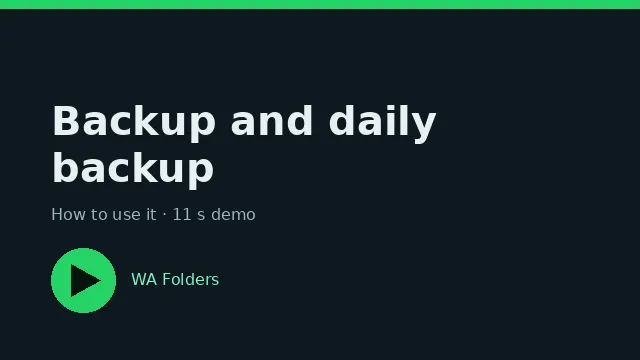
Backup, restore and daily backup
Download a backup of your folders, notes and reminders, and restore it later. Pro saves a daily HTML or CSV backup of chosen folders.
Speed
Privacy

Sell
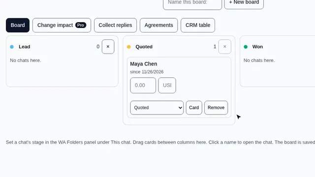
Deal board
Give a chat a deal stage and value, and see every deal on a board: Lead, Quoted, Won and Paid, or your own stages.
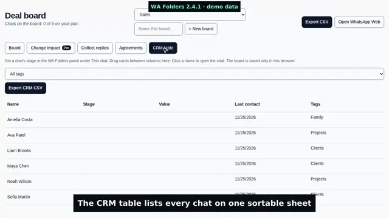
CRM table and contact cards
A contact card per chat, and one sortable CRM table with stage, value, last contact and tags.
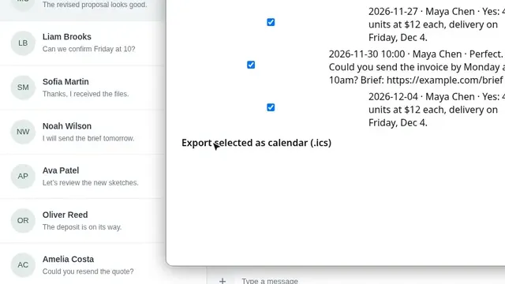
Dates to calendar
WA Folders finds dates and times in a chat and lists them with the message they came from. Pro exports them to your calendar.
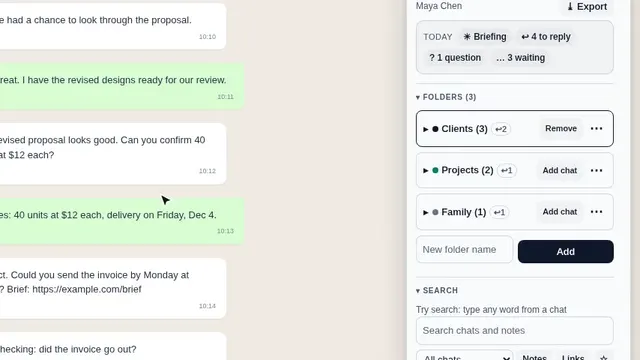
Watch words
Pick words like a client’s name or “invoice”. Matching messages, even in muted groups, collect in one Matches list.
Work
Agreement Ledger
Compare two messages to see what changed in quantities, prices and dates. Pro keeps a ledger of what was agreed.
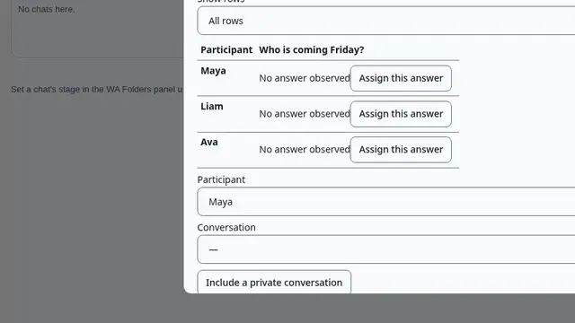
Group Reply Matrix
Asked a group a question? Collect each person’s answer in one worksheet.
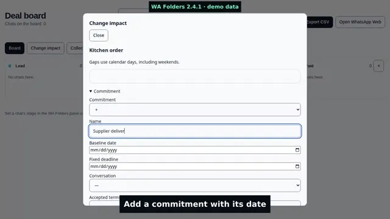
Change Impact Map
Link the commitments in a project, try another date, and see what else moves before you promise anything.
Translation Detail Check
Check a translation against the original for changed numbers, prices, units and product codes.
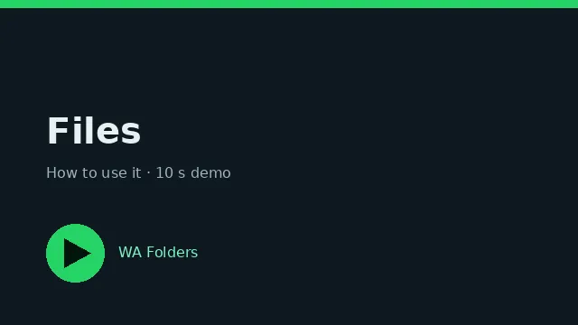
Files, Rename and save, Email as draft
One place for the photos, voice notes, videos and documents in chats you open. Save a folder as a ZIP, rename files, or attach one to an email draft.
AI and language
Catch me up and Draft a reply
Summarize the open chat, or draft a reply, with Chrome’s on-device AI or your own API key.
Voice notes to text and translation
Turn voice notes into text and translate messages between Portuguese, English and Spanish, on your computer by default.

Sync and AI agent access
Pro syncs folders, quick replies and rules to your other Chrome browsers. AI agent access lets Claude Desktop or Cursor read folders you allow.
New in 2.5.0
Pinned chats
Pin chats above the folder list in your own order. Free includes 5 pins; Pro has no limit.
Folder filters
Filter a folder by unread chats, mentions, unsaved numbers, replies you owe or groups. All five filters are free.
Snooze a chat
Take a chat out of WA Folders views until you bring it back. WhatsApp's own list still shows it. Pro can set a return time; a mention or direct reply can bring it back early.
Reply nudges
Write a reply now and get a reminder to insert it later. You press Send. If a draft is already in the box, you can copy the reply instead.
Keep board
Keep messages on a local board with tags, mark them done and export to CSV or Markdown. Free includes 20 items. Pro has no item limit.